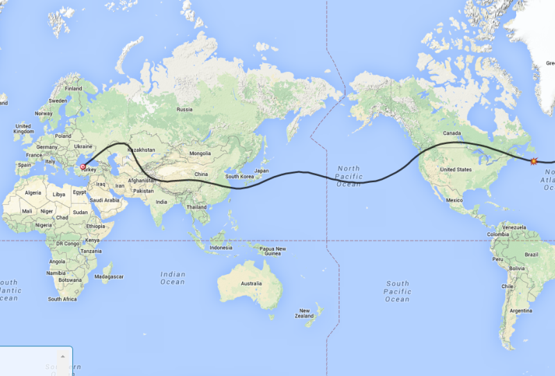

The balloon has reported in from Turkey and is currently moving Northeast toward the Black Sea at 135 mph.
The link below will take you to the APRS screen to check on the balloon progress.
http://aprs.fi/#!mt=roadmap&z=13&call=a%2FK6RPT-12&timerange=604800&tail=604800
Here is my latest prediction for the balloon’s future travel. This is based on its current position in Turkey and does show a safer path that does not take it far into Russia. It remains to be seen what China will think about the flight. As far as a record goes, this type of Super Pressure balloon has been flown around the globe before but not this close to the equator. One such balloon went around several times near the Artic Circle from England and another was flown near Antartica.
This balloon was completely built by K6RPT and his son, Lee, and the electronics were also homemade surface mount construction done in a modified toaster oven. This is pretty good for a homemade package.

Don, AI6RE